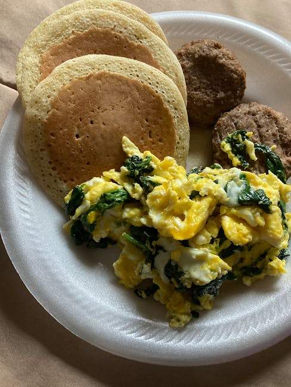

← Back to all nutrition guides
Healthy Snacks For Late Night Cravings
A realistic guide for busy professionals over 40.
Late-night cravings can easily derail your weight loss efforts, especially for men aged 40-65 who are trying to eat better. The good news is that by choosing healthy snacks for late night cravings, you can satisfy your hunger without sabotaging your progress. Instead of reaching for chips or sugary treats, consider snacks that not only curb your cravings but are also nutritious and filling. This approach allows you to enjoy a late-night snack without the guilt, making it easier to maintain a balanced diet. By incorporating healthier options into your evening routine, you can stick to your weight loss goals while still enjoying your favorite time of day: the late-night snack hour.
Want a personalized version of this strategy?
Try the AI Food Coach
Why Healthy Snacks For Late Night Cravings Matters
Healthy snacking is crucial for several reasons, especially when it comes to evening cravings. For men in the 40-65 age range, metabolic rates can slow down, making it even more important to choose snacks wisely. When you opt for unhealthy choices, not only do you risk consuming empty calories, but you may also experience blood sugar spikes that can disrupt sleep and lead to further cravings the next day. Conversely, healthy snacks can provide essential nutrients, slowly release energy, and satisfy your hunger without leading to weight gain. By choosing snacks that are high in fiber and protein, you promote satiety and stability in your blood sugar levels. This enables you to stay on track with your weight loss goals while enjoying your evenings. Making informed choices during late-night snacking can ultimately transform your overall health and well-being.
Simple Strategy
- Stock your kitchen with healthy snack options that are easy to prepare.
- Plan your late-night snacks ahead of time to avoid impulse decisions.
- Keep portions reasonable by using smaller bowls or containers to serve snacks.
These strategies work best when personalized to your lifestyle and goals.
Build Your Personalized Nutrition Plan
Most people know what foods are healthy. The hard part is knowing what to eat today. Today's Food Coach creates a simple, personalized daily plan based on your goals and lifestyle.
Start Your PlanExample Day of Eating
Start your day with a healthy breakfast filled with proteins and whole grains. For lunch, choose lean proteins and plenty of vegetables to fuel your afternoon. As the day winds down, prepare a nourishing dinner focused on whole foods. When cravings arise in the evening, reach for a small portion of Greek yogurt topped with fresh berries or a handful of almonds to satisfy your hunger. This way, you are nourishing your body while still enjoying your late-night ritual.
Common Mistakes
- Reaching for high-calorie snacks without considering portion sizes.
- Ignoring the nutritional content of snacks and choosing convenience over health.
- Snacking mindlessly in front of the TV or while on your phone.
Practical Tips
- Try to incorporate protein and fiber into your late-night snacks for better satiety.
- Keep healthy snacks visible and within reach to promote better choices.
- Create a designated snack time to avoid constant nibbling throughout the night.
Frequently Asked Questions
What are some examples of healthy late-night snacks?
Good options include Greek yogurt with fruit, air-popped popcorn, or a small handful of nuts.
How can I avoid late-night snacking altogether?
Brushing your teeth after dinner can help signal to your body that eating time is over.
Is it really okay to snack at night if I'm trying to lose weight?
Yes, as long as you choose healthy snacks and manage portion sizes.
Related Nutrition Guides
- Simple Weight Loss Strategies For Men Over 45
- How To Lose Weight Without Dieting After 40
- Why Do I Crave Food At Night
Try Today's Food Coach
Generate a personalized meal strategy based on your lifestyle and goals.
Try the AI Food Coach